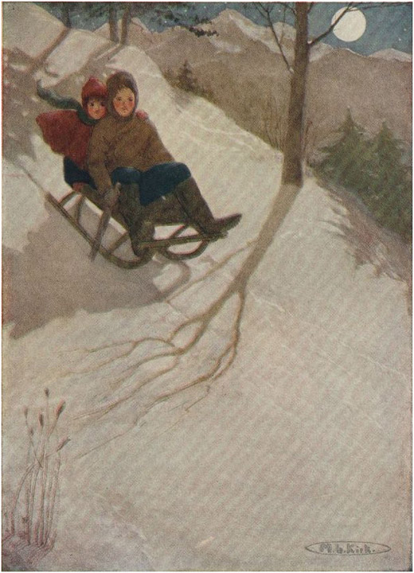

MUSIM DINGIN DI DESA

Salju menumpuk begitu tebal di sekitar gubuk Alm sehingga jendela-jendela tampak sejajar dengan tanah dan pintu rumah benar-benar hilang. Di sekitar gubuk Peter pun sama. Ketika anak laki-laki itu keluar untuk menyekop salju, ia harus merangkak melalui jendela; kemudian ia akan tenggelam dalam salju yang lembut dan menendang dengan tangan dan kakinya untuk membebaskan diri. Dengan membawa sapu, anak laki-laki itu harus membersihkan salju dari pintu agar tidak jatuh ke dalam gubuk.
Sang paman telah menepati janjinya; ketika salju pertama turun, ia pindah ke desa bersama Heidi dan kambing-kambingnya. Di dekat gereja dan balai desa terdapat reruntuhan tua yang dulunya merupakan bangunan luas. Seorang prajurit pemberani pernah tinggal di sana di masa lalu; ia berperang dalam perang Spanyol, dan setelah kembali dengan banyak kekayaan, ia membangun rumah yang megah untuk dirinya sendiri. Tetapi karena terlalu lama hidup di dunia yang riuh sehingga tidak tahan dengan kehidupan monoton di kota kecil itu, ia segera pergi, dan tidak pernah kembali. Setelah kematiannya, bertahun-tahun kemudian, meskipun rumah itu sudah mulai rusak, seorang kerabat jauhnya mengambil alih kepemilikannya. Pemilik baru itu tidak ingin membangunnya kembali, jadi orang-orang miskin pindah ke sana. Mereka harus membayar sewa yang sedikit untuk rumah itu, yang secara bertahap runtuh dan hancur berkeping-keping. Bertahun -tahun yang lalu, ketika sang paman datang ke desa bersama Tobias, ia pernah tinggal di sana. Sebagian besar waktu rumah itu kosong, karena musim dingin berlangsung lama, dan angin dingin akan bertiup melalui celah-celah di dinding. Ketika orang miskin tinggal di sana, lilin mereka akan padam dan mereka akan menggigil kedinginan dalam kegelapan. Tetapi sang paman tahu bagaimana cara menolong dirinya sendiri. Pada musim gugur, segera setelah ia memutuskan untuk tinggal di desa, ia sering datang, merapikan tempat itu sebaik mungkin.
Saat mendekati rumah dari belakang, seseorang memasuki ruangan terbuka, di mana hampir semua dindingnya hancur. Di satu sisi terlihat sisa-sisa kapel, yang kini tertutup oleh tanaman rambat yang sangat lebat. Di sebelahnya terdapat aula besar, dengan lantai batu yang indah dan rumput yang tumbuh di celah-celahnya. Sebagian besar dinding telah hilang dan sebagian langit-langit juga. Jika beberapa pilar tebal tidak tersisa untuk menopang sisanya, bangunan itu pasti akan runtuh. Paman telah membuat sekat kayu di sini untuk kambing-kambingnya, dan menutupi lantai dengan jerami. Beberapa koridor, sebagian besar setengah lapuk, akhirnya mengarah ke sebuah ruangan dengan pintu besi yang berat. Ruangan ini masih dalam kondisi baik dan memiliki panel kayu gelap di keempat dindingnya yang kokoh. Di salah satu sudut terdapat kompor besar, yang hampir mencapai langit-langit. Di atas ubin putih dilukis gambar-gambar biru menara tua yang dikelilingi pohon-pohon tinggi, dan para pemburu dengan anjing-anjing mereka. Ada juga pemandangan danau yang tenang, di mana, di bawah pohon ek yang rindang, seorang nelayan sedang duduk. Di sekitar kompor terdapat bangku. Heidi senang duduk di sana, dan begitu memasuki tempat tinggal baru mereka, ia mulai memeriksa lukisan-lukisan itu. Sesampainya di ujung bangku, ia menemukan sebuah tempat tidur yang terletak di antara dinding dan kompor. "Oh kakek, aku sudah menemukan kamar tidurku," seru gadis kecil itu. "Oh, betapa indahnya! Di mana kakek akan tidur?"
"Tempat tidurmu harus dekat kompor, agar kamu tetap hangat," kata lelaki tua itu. "Sekarang, kemarilah dan lihat tempat tidurku."
Setelah itu, kakeknya membawanya ke kamar tidurnya. Dari sana, sebuah pintu mengarah ke dapur terbesar yang pernah dilihat Heidi. Dengan susah payah, kakeknya telah melengkapi tempat ini. Banyak papan dipaku di dinding dan pintunya dikunci dengan kawat tebal, karena di baliknya, bangunan itu dalam keadaan reruntuhan. Semak belukar yang lebat tumbuh di sana, menjadi tempat berlindung bagi ribuan serangga dan kadal. Heidi sangat senang dengan rumah barunya, dan ketika Peter tiba keesokan harinya, dia tidak tenang sampai Peter melihat setiap sudut dan celah dari tempat tinggal yang unik itu.
Heidi tidur nyenyak di sudut perapiannya, tetapi butuh beberapa hari baginya untuk terbiasa. Ketika dia bangun di pagi hari dan tidak mendengar deru pohon cemara, dia akan bertanya-tanya di mana dia berada. Apakah salju terlalu tebal di dahan-dahan? Apakah dia jauh dari rumah? Tetapi begitu dia mendengar suara kakeknya di luar, dia mengingat semuanya dan akan melompat riang dari tempat tidur.
Setelah empat hari berlalu, Heidi berkata kepada kakeknya: "Aku harus pergi menemui nenek sekarang, dia sudah sendirian selama berhari-hari."
Namun sang kakek menggelengkan kepala dan berkata: "Kamu belum bisa pergi, Nak. Salju di sana sangat tebal dan masih turun. Peter saja hampir tidak bisa melewatinya. Gadis kecil sepertimu akan terjebak salju dan tersesat dalam sekejap. Tunggu sebentar sampai membeku, lalu kamu bisa berjalan di atas lapisan salju yang lebih tebal."
Heidi sangat menyesal, tetapi dia sangat sibuk sehingga hari-hari berlalu begitu cepat. Setiap pagi dan siang dia pergi ke sekolah, dengan penuh semangat mempelajari apa pun yang diajarkan kepadanya. Dia hampir tidak pernah melihat Peter di sana, karena Peter tidak sering datang. Guru yang ramah itu hanya sesekali berkata: "Sepertinya Peter tidak ada di sini lagi! Sekolah akan bermanfaat baginya, tetapi kurasa terlalu banyak salju untuk dia lalui." Tetapi ketika Heidi pulang menjelang malam, Peter biasanya mengunjunginya.
Setelah beberapa hari, matahari muncul sebentar di siang hari, dan keesokan paginya seluruh Pegunungan Alpen berkilauan dan bersinar seperti kristal. Ketika Peter seperti biasa melompat ke salju pagi itu, ia menabrak sesuatu yang keras, dan sebelum ia sempat menghentikan dirinya, ia terlempar sedikit menuruni gunung. Ketika akhirnya ia berhasil berdiri, ia menghentakkan kakinya ke tanah dengan sekuat tenaga. Tanah itu benar-benar membeku sekeras batu. Peter hampir tidak percaya, dan dengan cepat berlari ke atas, menelan susunya, dan memasukkan roti ke dalam sakunya, lalu mengumumkan: "Aku harus pergi ke sekolah hari ini!"
"Ya, pergilah dan belajarlah dengan baik," jawab ibunya.
Kemudian, sambil duduk di kereta luncurnya, bocah itu meluncur menuruni gunung dengan sangat cepat. Karena tidak dapat menghentikan lajunya ketika sampai di desa, ia terus meluncur semakin jauh, hingga tiba di dataran, di mana kereta luncurnya berhenti dengan sendirinya. Saat itu sudah terlambat untuk sekolah, jadi bocah itu santai saja dan baru tiba di desa ketika Heidi pulang untuk makan malam.
"Kita berhasil!" seru bocah itu saat masuk.
"Ada apa, Jenderal?" tanya sang paman.
"Salju," jawab Peter.
"Oh, sekarang aku bisa pergi menemui nenek!" seru Heidi gembira. "Tapi Peter, kenapa kamu tidak datang ke sekolah? Kamu bisa meluncur ke sana hari ini," lanjutnya dengan nada menegur.
"Aku meluncur terlalu jauh dengan kereta luncurku dan kemudian sudah terlambat," jawab Peter.
"Itu namanya desersi!" kata sang paman. "Orang yang melakukan itu harus dicabut telinganya; dengar?"
Bocah itu ketakutan, karena tidak ada seorang pun di dunia ini yang lebih dia hormati selain pamannya.
"Seorang jenderal sepertimu seharusnya merasa sangat malu melakukan hal itu," lanjut sang paman. "Apa yang akan kau lakukan dengan kambing-kambing itu jika mereka tidak lagi patuh kepadamu ?"
"Kalahkan mereka," jawabnya.
"Jika kamu tahu ada seorang anak laki-laki yang bertingkah seperti kambing yang tidak patuh dan harus dihukum, apa yang akan kamu katakan?"
"Memang pantas dia mendapatkan itu."
"Jadi sekarang kau tahu, jenderal kambing: jika kau bolos sekolah lagi, padahal seharusnya kau hadir, kau bisa datang kepadaku dan menuntut hakmu."
Akhirnya Peter mengerti maksud pamannya. Dengan lebih ramah , lelaki tua itu kemudian menoleh kepada Peter dan berkata, "Mari duduk di meja dan makan bersama kami. Kemudian kamu bisa pergi bersama Heidi, dan ketika kamu mengantarnya pulang di malam hari, kamu bisa makan malam di sini."
Perubahan tak terduga ini membuat Peter senang. Tanpa membuang waktu, ia segera menghabiskan makanannya. Heidi, yang telah memberikan sebagian besar makan malamnya kepada anak laki-laki itu, sudah mengenakan mantel baru Clara. Kemudian mereka bersama-sama naik ke atas, Heidi terus mengobrol sepanjang waktu. Tetapi Peter tidak mengucapkan sepatah kata pun. Ia sedang asyik dengan pikirannya dan bahkan tidak mendengarkan cerita Heidi. Sebelum mereka memasuki gubuk, anak laki-laki itu berkata dengan keras kepala: "Kurasa aku lebih suka pergi ke sekolah daripada dipukuli oleh paman." Heidi segera menguatkan tekadnya.
Ketika mereka masuk ke kamar, ibu Peter sendirian di meja sedang menjahit. Nenek tidak terlihat di mana pun. Brigida kemudian memberi tahu Heidi bahwa nenek terpaksa tetap di tempat tidur pada hari-hari dingin itu, karena ia merasa tidak begitu kuat. Itu adalah sesuatu yang baru bagi Heidi. Dengan cepat berlari ke kamar wanita tua itu, ia menemukannya berbaring di tempat tidur sempit, terbungkus selendang abu-abu dan selimut tipisnya.
"Syukurlah!" seru nenek itu ketika mendengar langkah cucunya. Sepanjang musim gugur dan musim dingin, ketakutan tersembunyi telah menggerogoti hatinya, bahwa Heidi akan dipanggil oleh pria asing yang telah banyak diceritakan Peter kepadanya. Heidi mendekati tempat tidur, bertanya dengan cemas: "Apakah nenek sakit parah?"
"Tidak, tidak, Nak," wanita tua itu menenangkannya, "embun beku hanya sedikit menembus anggota tubuhku."
"Apakah kamu akan sembuh lagi begitu cuaca hangat tiba?" tanya Heidi.
"Ya, ya, dan jika Tuhan menghendaki, bahkan lebih cepat. Aku ingin kembali ke alat pemintalku dan aku hampir mencobanya hari ini. Tapi aku akan bangun besok," kata nenek itu dengan percaya diri, karena ia menyadari betapa takutnya Heidi.
Ucapan terakhir itu membuat anak itu merasa lebih bahagia . Kemudian, sambil memandang neneknya dengan heran, dia berkata: "Di Frankfurt orang-orang mengenakan selendang saat keluar rumah. Mengapa nenek mengenakannya di tempat tidur?"
"Aku memakainya agar tetap hangat, Heidi. Aku senang memilikinya, karena selimutku sangat tipis."
"Tapi, nenek, ranjangmu miring ke bawah di bagian kepala, padahal seharusnya tinggi. Tidak seharusnya ranjang seperti itu."
"Aku tahu, Nak, aku bisa merasakannya dengan jelas." Sambil berkata demikian , wanita tua itu mencoba mengubah posisi duduknya di atas bantal yang terbentang di bawahnya seperti papan tipis. "Bantalku memang tidak pernah tebal, dan tidur di atasnya selama bertahun-tahun telah membuatnya rata."
"Oh, sayang sekali, seandainya aku meminta Clara untuk memberikan tempat tidur yang kumiliki di Frankfurt!" keluh Heidi. "Tempat tidur itu punya tiga bantal besar; aku hampir tidak bisa tidur karena terus tergelincir dari bantal-bantal itu. Apakah nenek bisa tidur dengan bantal-bantal itu?"
"Tentu saja, karena itu akan membuatku tetap hangat. Aku juga bisa bernapas jauh lebih lega," kata nenek itu, sambil mencoba mencari tempat yang lebih tinggi untuk berbaring. "Tapi aku tidak boleh membicarakannya lagi , karena aku harus bersyukur atas banyak hal. Aku mendapatkan roti gulung yang enak setiap hari dan memiliki selendang hangat yang indah ini. Aku juga memiliki kamu, anakku! Heidi, tidakkah kamu ingin membacakan sesuatu untukku hari ini?"
Heidi segera mengambil buku itu dan membacakan satu lagu demi satu. Sementara itu, neneknya berbaring dengan tangan terlipat; wajahnya, yang beberapa saat lalu tampak begitu sedih, kini berseri-seri dengan senyum bahagia.
Tiba-tiba Heidi berhenti.
"Nenek, apakah kamu sudah sehat lagi?" tanyanya.
"Aku merasa jauh lebih baik, Heidi. Tolong selesaikan lagunya, ya?"
Anak itu menurut, dan ketika sampai pada kata-kata terakhir,
Saat mataku mulai redup dan sedih,
bersinar lebih terang ,
Jiwaku, seorang pengembara yang gembira,
Semoga perjalanan pulang Anda aman.
"Selamat jalan pulang!" serunya: "Oh, nenek, aku tahu bagaimana rasanya pulang ke rumah." Setelah beberapa saat dia berkata: "Hari sudah mulai gelap, nenek, aku harus pulang sekarang. Aku senang nenek sudah sembuh lagi."

KEDUA ANAK ITU SUDAH TERBANG MENURUN PEGUNUNGAN ALP
Sang nenek, sambil memegang tangan anaknya, berkata: "Ya, aku bahagia lagi, meskipun aku harus tetap di tempat tidur. Tidak ada yang tahu betapa sulitnya berbaring di sini sendirian, hari demi hari. Aku tidak mendengar sepatah kata pun dari siapa pun dan tidak dapat melihat secercah sinar matahari. Terkadang aku memiliki pikiran yang sangat sedih, dan seringkali aku merasa seolah-olah aku tidak tahan lagi. Tetapi ketika aku dapat mendengar lagu-lagu indah yang telah kau bacakan untukku, itu membuatku merasa seolah-olah cahaya bersinar ke dalam hatiku, memberiku sukacita yang paling murni."
Sambil berjabat tangan, anak itu mengucapkan selamat malam, lalu menarik Peter bersamanya dan berlari keluar. Bulan yang cemerlang bersinar di atas salju putih, seterang siang hari. Kedua anak itu sudah melesat menuruni Pegunungan Alpen, seperti burung yang melayang di udara.
Setelah Heidi tidur malam itu, ia terjaga sebentar, memikirkan semua yang dikatakan neneknya, terutama tentang kegembiraan yang diberikan lagu-lagu itu kepadanya. Seandainya nenek yang malang itu bisa mendengar kata-kata penghibur itu setiap hari! Heidi tahu bahwa mungkin butuh satu atau dua minggu lagi sebelum ia bisa mengulangi kunjungannya. Anak itu menjadi sangat sedih ketika ia membayangkan betapa tidak nyaman dan kesepiannya wanita tua itu. Apakah tidak ada cara untuk membantunya? Tiba-tiba Heidi mendapat ide, dan itu membuatnya sangat gembira sehingga ia merasa tidak sabar menunggu pagi tiba untuk melaksanakan rencananya. Tetapi karena kegembiraannya, ia lupa doa malamnya, jadi sambil duduk di tempat tidur, ia berdoa dengan sungguh-sungguh kepada Tuhan. Kemudian, kembali berbaring di atas jerami yang harum, ia segera tidur dengan tenang dan nyenyak hingga pagi yang cerah tiba.